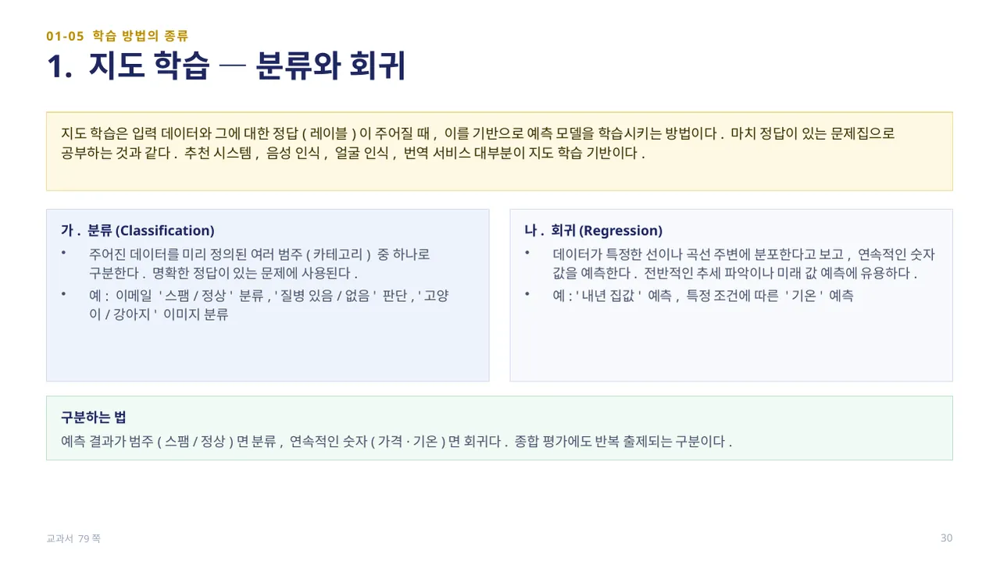
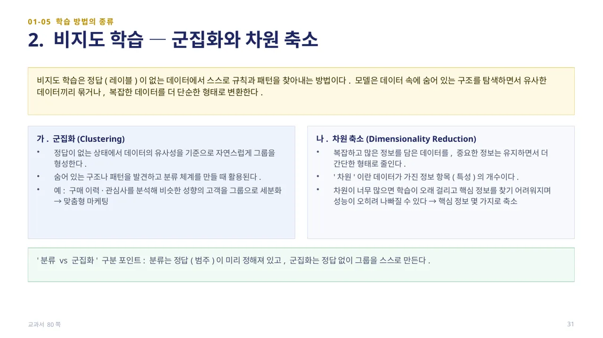
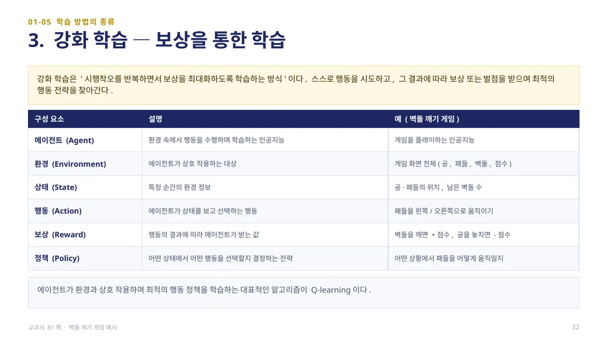
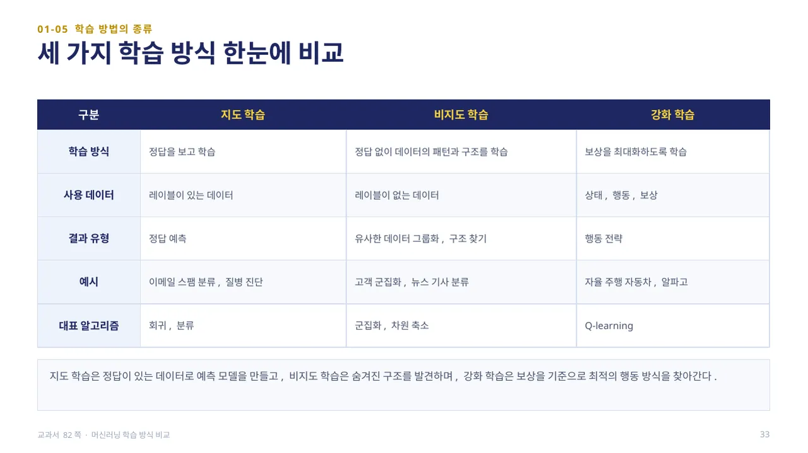
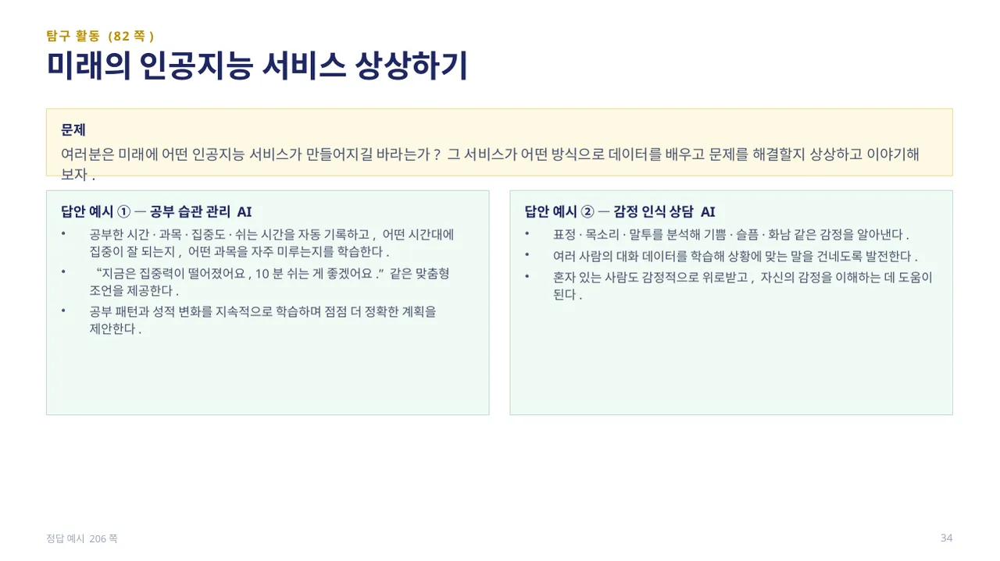
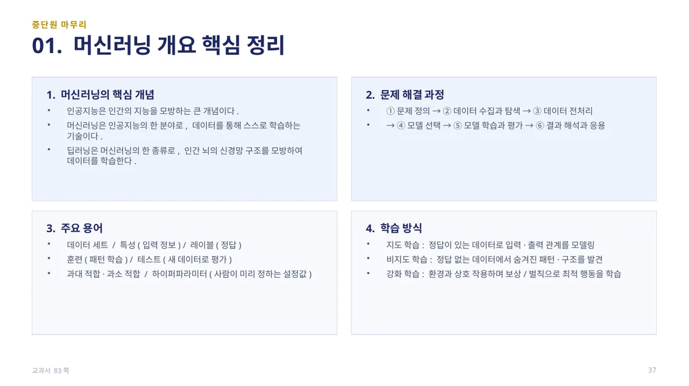

중단원 01. 머신러닝 개요 · 62–84쪽 소단원 05. 머신러닝 학습 방법의 종류· 79–82쪽
이 웹 주제의 연계 범위: 79–82쪽
교과서 79–82쪽
머신러닝 학습 방법의 종류
정답을 배우나요, 구조를 찾나요, 행동의 보상을 배우나요?

지도 학습은 입력 데이터와 그에 대한 정답(레이블)이 주어질 때, 이를 기반으로 예측 모델을 학습시키는 방법입니다. 마치 정답이 있는 문제집으로 공부하는 것과 같으며, 추천 시스템·음성 인식·얼굴 인식·번역 서비스 대부분이 지도 학습 기반입니다.
분류(Classification)는 주어진 데이터를 미리 정의된 여러 범주 중 하나로 구분합니다(예: 이메일 스팸/정상, 질병 있음/없음). 회귀(Regression)는 데이터가 특정한 선이나 곡선 주변에 분포한다고 보고 연속적인 숫자 값을 예측합니다(예: 내년 집값, 기온 예측). 예측 결과가 범주면 분류, 연속적인 숫자면 회귀입니다 — 종합 평가에도 반복 출제되는 구분입니다. (교과서 79쪽)

비지도 학습은 정답(레이블)이 없는 데이터에서 스스로 규칙과 패턴을 찾아내는 방법입니다. 모델은 데이터 속에 숨어 있는 구조를 탐색하면서 유사한 데이터끼리 묶거나, 복잡한 데이터를 더 단순한 형태로 변환합니다.
군집화(Clustering)는 정답이 없는 상태에서 데이터의 유사성을 기준으로 자연스럽게 그룹을 형성합니다(예: 구매 이력·관심사로 고객을 세분화해 맞춤형 마케팅). 차원 축소(Dimensionality Reduction)는 데이터가 가진 정보 항목(특성, 차원)이 너무 많으면 학습이 오래 걸리고 성능이 나빠질 수 있으므로, 중요한 정보는 유지하면서 더 간단한 형태로 줄입니다. 분류는 정답(범주)이 미리 정해져 있고, 군집화는 정답 없이 그룹을 스스로 만든다는 점이 핵심적인 차이입니다. (교과서 80쪽)

강화 학습은 시행착오를 반복하면서 보상을 최대화하도록 학습하는 방식입니다. 스스로 행동을 시도하고, 그 결과에 따라 보상 또는 벌점을 받으며 최적의 행동 전략을 찾아갑니다.
벽돌 깨기 게임을 예로 들면, 에이전트(게임을 플레이하는 인공지능)가 환경(게임 화면 전체)과 상호 작용하면서 상태(공·패들의 위치, 남은 벽돌 수)를 보고 행동(패들을 왼쪽/오른쪽으로 움직이기)을 선택하면 보상(벽돌을 깨면 +점수, 공을 놓치면 -점수)이 주어지고, 어떤 상태에서 어떤 행동을 선택할지 결정하는 전략을 정책이라 합니다. 이렇게 최적의 행동 정책을 학습하는 대표적인 알고리즘이 Q-learning입니다. (교과서 81쪽)

세 학습 방식을 한 표로 비교하면 — 지도 학습은 정답을 보고 학습하며 레이블이 있는 데이터를 사용해 정답을 예측합니다(예: 스팸 분류, 질병 진단). 비지도 학습은 정답 없이 패턴과 구조를 학습하며 레이블이 없는 데이터로 유사한 데이터를 그룹화하거나 구조를 찾습니다(예: 고객 군집화). 강화 학습은 보상을 최대화하도록 학습하며 상태·행동·보상 정보를 사용해 행동 전략을 만듭니다(예: 자율 주행, 알파고).
대표 알고리즘도 다릅니다 — 지도 학습은 회귀·분류, 비지도 학습은 군집화·차원 축소, 강화 학습은 Q-learning입니다. 지도 학습은 정답이 있는 데이터로 예측 모델을 만들고, 비지도 학습은 숨겨진 구조를 발견하며, 강화 학습은 보상을 기준으로 최적의 행동 방식을 찾아갑니다. (교과서 82쪽)

탐구 활동(82쪽): 미래에 어떤 인공지능 서비스가 만들어지길 바라는지, 그 서비스가 어떤 방식으로 데이터를 배우고 문제를 해결할지 상상하고 이야기해 봅니다.
답안 예시 — 공부 습관 관리 AI: 공부한 시간·과목·집중도를 기록해 어떤 시간대에 집중이 잘 되는지 학습하고 맞춤형 조언을 제공합니다. 감정 인식 상담 AI: 표정·목소리·말투를 분석해 감정을 알아내고 상황에 맞는 말을 건넵니다. 발표할 때는 ‘어떤 데이터를 배우는가’와 ‘지도·비지도·강화 중 어떤 방식에 가까운가’를 함께 말합니다. (정답 예시 206쪽)

중단원 마무리 — 01. 머신러닝 개요: 인공지능은 인간의 지능을 모방하는 큰 개념이고, 머신러닝은 인공지능의 한 분야로 데이터를 통해 스스로 학습하는 기술이며, 딥러닝은 머신러닝의 한 종류로 인간 뇌의 신경망 구조를 모방합니다. 문제 해결 과정은 ①문제 정의 → ②데이터 수집과 탐색 → ③데이터 전처리 → ④모델 선택 → ⑤모델 학습과 평가 → ⑥결과 해석과 응용의 순서입니다.
주요 용어로는 데이터 세트·특성(입력 정보)·레이블(정답), 훈련(패턴 학습)·테스트(새 데이터로 평가), 과대 적합·과소 적합, 하이퍼파라미터(사람이 미리 정하는 설정값)가 있습니다. 학습 방식은 지도 학습(정답이 있는 데이터로 입력·출력 관계를 모델링), 비지도 학습(정답 없는 데이터에서 숨겨진 패턴·구조를 발견), 강화 학습(환경과 상호 작용하며 보상·벌칙으로 최적 행동을 학습)으로 나뉩니다. (교과서 83쪽)
 인공지능 파이썬 실무
인공지능 파이썬 실무